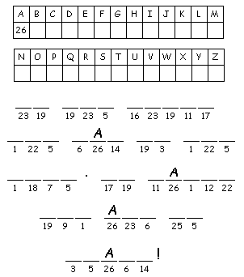
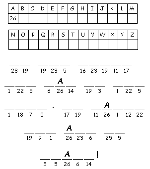

Image
from http://www.first-school.ws

This
week's lessons: Isaiah
64:1-9, Psalm
80:1-7, 17-19, 1
Corinthians 1:3-9, Mark
13:24-37
Elementary School Pew-work
W M Y P A S S
|
(Mark 13:31) Heaven and earth will pass away, but my words will not pass away. |
Word List |
from http://www.efree.mb.ca/lectionarypuzzles free to distribute for free with this notice. Words are in a straight line left to right or top to bottom |
||
1. Who knows when
Jesus will come
back?
_____________________________________________________________
2. How will Jesus come
back?
_____________________________________________________________
3. Why is Jesus'
second coming good
news?
_____________________________________________________________
4. What does Jesus say
about heaven and
earth?
_____________________________________________________________
Questions taken from Sunday School Lessons; http://www.sundayschoollessons.com/baplord.htm
|
|
 |
Next week's lessons: Isaiah 40:1-11, Psalm 85:1-2, 8-13, 2 Peter 3:8-15a, Mark 1:1-8